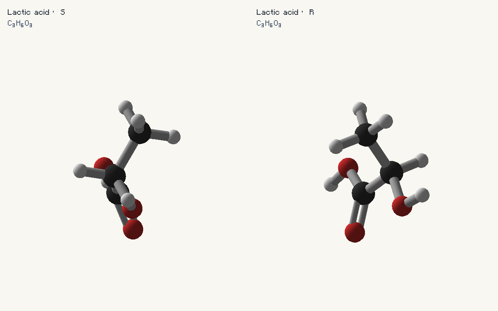
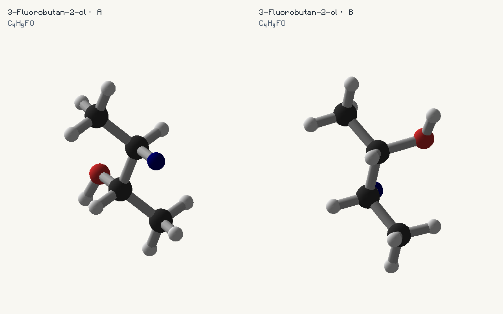
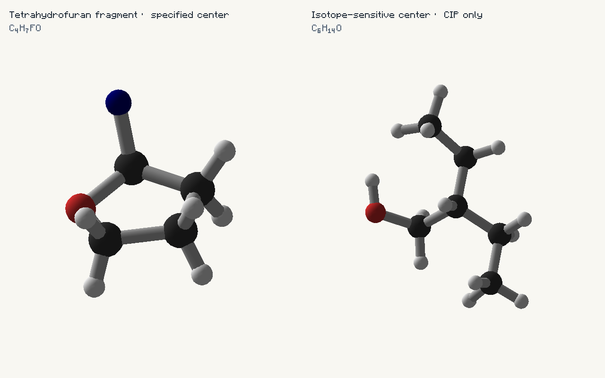
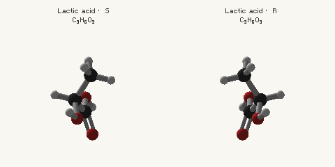

Chirality: preserving configuration
Tetrahedral @ and @@ now produce genuine three-dimensional geometry. Absolute R/S assignments are calculated during loading and checked against the generated coordinates.
Java examples run in your host mod’s common initialization with import io.github.wurtzitane.avogadro.api.*;. Groovy examples belong in a GroovyScript post-init script; both sides need GroovyScript, but connected clients need no local script. JSON is one definition per file under config/avogadro/server/data/chemistry/molecules/; the filename supplies the path of the ID. Use /avogadro reload for JSON changes; restart for script changes. The library registers none of these samples automatically.
Complete Java companion · Complete Groovy companion
Local ordering is not absolute configuration
In SMILES, chirality follows the order in which neighbors are written, including branch neighbors, ring-closure positions and bracket hydrogen. Swapping two written neighbors requires changing @ to @@ to keep the same configuration. Neither token means R or S on its own. Avogadro delegates this ordering to OpenChemLib; it never treats the tokens as fixed R/S shortcuts.
N[C@@H](C)C(=O)O
N[C@H](C(=O)O)C
[C@@H](N)(C(=O)O)CThese three SMILES describe the same alanine configuration. Their canonical output geometry and assignments agree. Ordinary unmarked SMILES continue using the existing schematic layout.
Enantiomers: opposite configurations

AvogadroApi.owner("chemistry_guide").register(
new MoleculeBuilder("chemistry:lactic_a").name("Lactic acid · S").smiles("C[C@H](O)C(=O)O"));import io.github.wurtzitane.avogadro.api.*
mods.avogadro.molecules.register(
new MoleculeBuilder("chemistry:lactic_a").name("Lactic acid · S").smiles("C[C@H](O)C(=O)O")){
"name": "Lactic acid · S",
"smiles": "C[C@H](O)C(=O)O"
}AvogadroApi.owner("chemistry_guide").register(
new MoleculeBuilder("chemistry:lactic_b").name("Lactic acid · R").smiles("C[C@@H](O)C(=O)O"));import io.github.wurtzitane.avogadro.api.*
mods.avogadro.molecules.register(
new MoleculeBuilder("chemistry:lactic_b").name("Lactic acid · R").smiles("C[C@@H](O)C(=O)O")){
"name": "Lactic acid · R",
"smiles": "C[C@@H](O)C(=O)O"
}For fully specified tetrahedral enantiomers, both members use the same deterministically generated canonical conformer. The opposite member is reflected in X. Rotating the camera is a proper rotation and does not turn one enantiomer into the other. Coordinates are schematic conformers, not claims of measured crystal structures or global energy minima.
Diastereomers: only some centers inverted

AvogadroApi.owner("chemistry_guide").register(
new MoleculeBuilder("chemistry:diastereomer_a").smiles("C[C@H](O)[C@H](F)C"));import io.github.wurtzitane.avogadro.api.*
mods.avogadro.molecules.register(
new MoleculeBuilder("chemistry:diastereomer_a").smiles("C[C@H](O)[C@H](F)C")){
"name": "3-Fluorobutan-2-ol · A",
"smiles": "C[C@H](O)[C@H](F)C"
}AvogadroApi.owner("chemistry_guide").register(
new MoleculeBuilder("chemistry:diastereomer_b").smiles("C[C@H](O)[C@@H](F)C"));import io.github.wurtzitane.avogadro.api.*
mods.avogadro.molecules.register(
new MoleculeBuilder("chemistry:diastereomer_b").smiles("C[C@H](O)[C@@H](F)C")){
"name": "3-Fluorobutan-2-ol · B",
"smiles": "C[C@H](O)[C@@H](F)C"
}A diastereomer is generated and checked separately. Its coordinates need not be a simple reflection. The two examples change only one authored center, so they are not enantiomers.
Read the validated assignment
MoleculeDef definition = AvogadroApi.registeredView().get(
new ResourceLocation("chemistry:lactic_a"));
definition.structure().stereochemistry().forEach((atomIndex, configuration) -> {
// atomIndex is zero-based in definition.structure().atoms().
System.out.println(atomIndex + ": " + configuration);
});Import io.github.wurtzitane.avogadro.molecule.MoleculeDef and net.minecraft.util.ResourceLocation for that query. The immutable map contains only supplied, validated R/S assignments. An absent entry means no assigned configuration; it does not mean “achiral,” “R,” or “S.” The examiner’s atom-hover label includes CIP information where present. Atom ordering for stereochemical SMILES is canonicalized; query the output graph before authoring index-based annotations or constraints.
Isotopes, multiple bonds and rings
Centres 1.5 applies CIP sequence rules, including duplicate nodes for multiple bonds and ring paths, isotope ranking and auxiliary stereochemical comparisons. OpenChemLib 2026.10.3 handles parsing, canonicalization and conformer generation. Both are pinned, bundled common-side Java libraries with BSD licenses. JavaFX is not used by this path.

AvogadroApi.owner("chemistry_guide").register(
new MoleculeBuilder("chemistry:isotope").smiles("CC[C@](CO)([H])[14CH2]C"));import io.github.wurtzitane.avogadro.api.*
mods.avogadro.molecules.register(
new MoleculeBuilder("chemistry:isotope").smiles("CC[C@](CO)([H])[14CH2]C")){
"name": "Isotope-sensitive center · CIP only",
"smiles": "CC[C@](CO)([H])[14CH2]C"
}The isotope affects CIP ranking. Element spheres remain element-colored; this does not automatically configure nuclear/neutron rendering, nor does the existing average atomic-weight API become an exact isotope-mass calculator.
Unspecified stays unspecified
NC(C)C(=O)O has no assignment. With partially specified input, a conformer necessarily shows one spatial arrangement for any unmarked center, but Avogadro does not claim or label that arrangement as authored stereochemistry. No unspecified center is added to the assignment map. Use explicit stereochemical input when the displayed stereoisomer matters.
Copies, synchronization and geometry changes
A normal copy shares the immutable geometry and assignment map. Synchronization carries the original JSON and reconstructs the same deterministic result; the binary geometry cache includes assignments. Viewers, tooltips and exports consume the finished positions without stereochemical parsing or CIP work per frame. Current clients and servers must use the same build: synchronization protocol 3 rejects older payloads even though the public mod version remains unchanged.
StructureConstraints.apply(MoleculeStructure) and withPositions retain labels and reject flattened or inverted specified centers. Generic fragment conversion and arbitrary topology edits retain actual positions but do not carry a claim that previous CIP labels are still valid after atom/bond changes. To obtain fresh validated R/S assignments for changed chemistry, supply updated stereochemical SMILES.
Explicit limits and diagnostics
- Supported annotations are tetrahedral
@and@@on four-ligand absolute centers, including bracket H. - Directional double bonds (
/,\), axial/allene, lone-pair stereochemistry, extended@SP/@TB/@OH/@THsyntax, pseudoasymmetric r/s, relative stereo groups and reaction/CXSMILES are rejected. This is not complete stereochemical OpenSMILES conformance. - Unresolved wildcards in stereochemical SMILES are rejected because their unknown ligands can change CIP priorities. Resolve groups before requesting R/S.
- Marked SMILES are bounded to 8192 characters and 512 atoms after hydrogen expansion; conformer search has a five-second limit, and CIP graph work is bounded. Failure produces a definition diagnostic, never a flattened fallback or guessed label.
- Invalid annotations, non-stereogenic marked centers, failed conformer checks and unresolved CIP assignments reject that definition.
Animated proof

Sources
OpenSMILES specification · OpenChemLib · Centres CIP implementation and validation cases · RDKit’s documentation of the Centres-derived CIP approach